General Section¶
The section contains the following self-explanatory fields:
general:
meshDir: something # full path to mesh directory
dt: 1. # time step size in seconds
finalTime: 150. # final simulation time in seconds
checkNumericalDispersion: true # enable/disable check for numerical dispersion
checkCfl: true # enable/disable CFL check
Caution
The general section is mandatory: do not forget it when you create the input file!
IO Section¶
Defines if and how to collect data. Specifically, the code supports data collection in two forms, namely a snapshot matrix and/or seismogram. The snaptshot matrix stores the state over the full mesh sampled with a specific frequency during the simulation. The seismogram, instead, stores the velocity sampled with a target frequency only at specific receivers located on the domain surface. The receivers’ locations are set in the input file by providing their angles in degrees. Receivers mimic the role of, e.g., real recording startions on the Earth surface.
io:
snapshotMatrix:
binary: true # set false if you want to print ascii, true for binary
velocity:
freq: 1 # every how many time steps to sample velocity field
fileName: snaps_vp # filename to save snapshots to
stress:
freq: 1 # every how many time steps to sample stresses
fileName: snaps_sp # filename to save snapshots to
seismogram:
binary: false # set false to write ascii file, true for binary
freq: 10 # every how many time steps to sample stresses
receivers: [5, 10, ...] # comma-separated angles (degrees) of all receiver locations
# on surface where to collect seismograms
Tip
The IO section is optional:
if the full section is omitted in the input, data collection is disabled and no output files are generated
if you only want the snapshotMatrix matrix, just enable that node and omit the seismogram node
if you only want the seismogram, enable that node and omit the one for the snapshotMatrix node
Source/forcing Section¶
Specifies the parametrization of the source signal.
Caution
The forcing section is mandatory: do not forget it when you create the input file!
You need to choose one of these options:
single forcing term
multi-forcing simulation solved by running sequential rank-1 solves
multi-forcing simulation solved by running sequential rank-2 solves
Below we discuss these options in detail.
Single Forcing Run¶
For a standard run with just a single forcing term, you can set up the corresponding node in the yaml input as:
source:
signal:
kind: ricker # choices: sinusoid, gaussDeriv, ricker
depth: 1100.0 # depth of the source in Km
period: 40. # period of the signal in seconds
delay: 10.0 # delay in seconds
For a full example of this scenario, see the first demo.
Multi-forcing simulation using rank-1¶
This is the case where you are interested in simulating multiple forcing terms within the same simulation, but want to use the rank-1 formulation, i.e. discrete state and forcing term are stored using 1D arrays. Therefore, the code solves all the realizations sequentially.
For example, suppose that you want to explore the wave dynamics for a source with fixed kind, period and delay, but for multiple source depths. To this end, you can just set the depth yaml field to be a comma-separated list of target depths in Kilometers.
source:
signal:
kind: ricker
depth: [1100., 550., 650., ...] # km
period: 40. # seconds
delay: 10.0 # seconds
If, instead of the depth, you want to sample the period, you can fix the depth and just provide a list of signal period samples to solve for. If you provide a list of samples for both the period and depth, then the code will use a tensor-product to define all cases. For example, if you specify 20 depths and 10 periods, the code will thus solve 200 trajectories.
For a full example of this rank-1 multi-forcing scenario, see the second demo.
Multi-forcing simulation using rank-2¶
This is the case where you are interested in simulating multiple forcing terms within the same simulation, and want to use the rank-2 formulation, i.e. the discrete state and forcing term are stored using 2D arrays, allowing to solve sets of relizations simultaneously.
For example, suppose that you want to explore the wave dynamics for a source with fixed kind, period and delay, but for multiple source depths. To this end, you can just set the depth yaml field to be a comma-separated list of target depths in Kilometers and specify a forcingSize. The forcingSize defines how many realizations are solved at once using the rank-2 formulation. Note that the forcingSize must be a divisor of number of target samples.` For example, if you specify 20 depths, the forcingSize must be a divisor of 20. Another example, if you specify 20 depths and 10 periods, the total number of trajectories to compute is 200, so forcingSize must be a divisor of 200.
source:
signal:
# ...
# same fields/options shown in 3.2 above
# ...
forcingSize: 4 # forcingSize>=2 enables rank-2 solution
Material Model Section¶
Last but not least, we have the material model parametrization. You need to choose one of the options below.
Important
The material model section is mandatory: do not forget it when you create the input file!
Single Layer Material Model¶
Models a domain with a single medium without discontinuities as shown in the figure below and such that both the density and shear velocity have a parametric radial dependence.
{kind=link}
The code currently supports up to quadratic parametrizations as:
Important
the coefficients above should be provided considering the density must be in [kg/m^3], and the shear velocity must be in [m/s], and \(x\) to be in units of [Km].
Specifying such a model in the input file simply involves setting the coefficient:
material:
kind: unilayer
layer:
density: [a0, a1, a2] # density must have units of kg/m^3
velocity: [b0, b1, b2] # velocity must have units of m/s
Tip
If you want a homogenouos material (i.e., constant density and shear velocity), you can just fix \(a_0, b_0\) and set all other coefficients to zero.
Two-layer Material Model¶
Models a material model with two layers, separated by a single discontinuity as shown in the figure below. Both the density and shear velocity have parametric radial dependence.
{kind=link}
Important
Within each region, the profiles can be up to quadratic. The coefficients should be provided such that the density is in [kg/m^3], the shear velocity in [m/s], assuming \(x\) to be in units of [Km], and the discontinuity is \(d\) [km] deep.
Defining such a model in the input file can be done as follows:
material:
kind: unilayer
layer1:
density: [a0, a1, a2] # density must have units of kg/m^3
velocity: [b0, b1, b2] # velocity must have units of m/s
layer2:
depth: integer # must have units of km
density: [c0, c1, c2] # density must have units of kg/m^3
velocity: [d0, d1, d2] # velocity must have units of m/s
where it is intended that within each layer, the density and shear velocity can have different parametrizations. Note that this supports different parametrizations within each layer, and potentially discontinuous profiles.
The PREM Material Model¶
The PREM model is a radial model representing the average Earth properties, and one of the most commonly adopted. Choose it from the input file as:
material:
kind: prem
The details of the parametrization for the PREM model are handled directly within the code.
For more details, check the following references:
Dziewonski, A.M., and D.L. Anderson. 1981. “Preliminary reference Earth model.” Phys. Earth Plan. Int. 25:297-356.
Caution
PREM is for Earth only!
The PREM model only makes sense when you are simulating the Earth. So your domain must be bounded between the core-mantle boundary (CMB) located at \(r_{cmb} = 3,480\) km and the Earth surface located at \(r_{earth} = 6,371\) km. These are the default bounds used by the meshing script.
Custom Material Model¶
If you are not interested in using one of the models above, you can also try your own without needing to change the internal source code. To do so, you need two do two things:
in your input file, you need to set:
material: kind: custom
modify the
MyCustomMaterialModelinside the main file as you desire such that when thecomputeAtmethod is called for a given grid point in the domain, you set the local density and shear velocity according to you model.
Important
Extending the set of supported models
The modular structure of the code allows to easily add new models: this can easily be done by adding a new
derived class inside the models,
add an enum field that identifies that model in this file, and adding the code in the parser class to recognize that if selected from the input file.